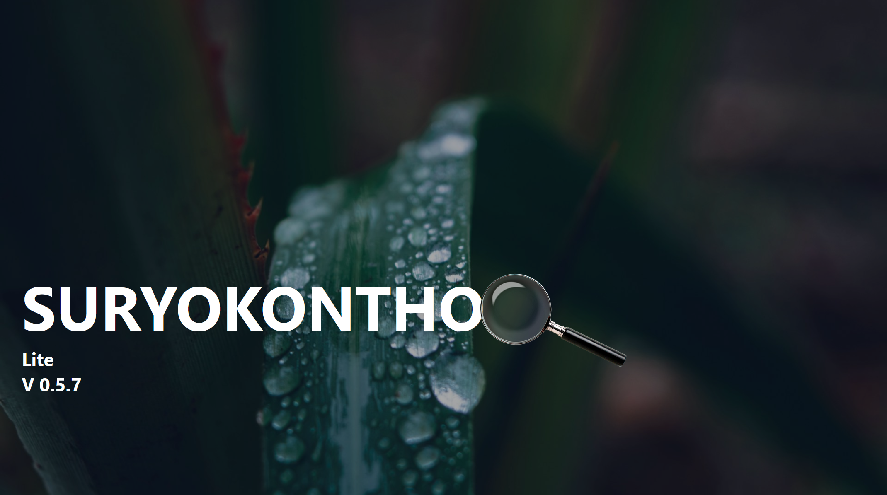

Deskripsi Diri
Saya adalah seorang IT Administrator dan seorang Software Developer yang berfokus pada pengembangan arsitektur aplikasi enterprise berskala kecil ke menengah. Saat ini, saya aktif membangun sistem informasi manajemen performa organisasi menggunakan ekosistem .NET (C#) dan database PostgreSQL. Saya memiliki ketertarikan mendalam pada penerapan desain arsitektur yang bersih seperti Clean Architecture dan Domain-Driven Design (DDD) untuk memastikan kode tetap maintainable dan scalable.
Selain sibuk di dunia *backend* dan optimasi basis data, saya juga memiliki antusiasme dalam pengembangan dasbor visualisasi data yang ramah performa, khususnya untuk perangkat dengan spesifikasi terbatas. Di waktu luang, saya sering mengeksplorasi perkembangan games, game developer dan konten kreator serta perkembangan tren subkultur pop kreatif digital terkini.
Riwayat Pendidikan & Sertifikasi
- Diploma I Spesialisasi Perpajakan - STAN (Lulus 2015)
- Sertifikasi Profesional: Cisco Certified: DevOps Expert (Tahun 2024)
- Sertifikasi Kompetensi: Administrator Sistem Tingkat Menegah
- Sertifikasi Kompetensi: Pengelolaan Database
- Sertifikasi Kompetensi: Pengolahan Data dan Visualisasi Data
Keahlian Teknis
- Bahasa Pemrograman: C#, Java, SQL
- Framework & Tools: .NET Core, Entity Framework Core, PostgreSQL, Git
- Metodologi: Layered Architecture, RESTful API, Object-Oriented Programming (OOP), Clean Architecture
Pengalaman Kerja (Tabel 1)
| Tahun | Posisi | Instansi / Perusahaan |
|---|---|---|
| 2024 - Sekarang | Senior Back-End Developer | Kantor Wilayah DJP Jawa Tengah II |
| 2022 - 2024 | Junior .NET Programmer | Kantor Wilayah DJP Jawa Barat I |
Riwayat Proyek Utama (Tabel 2)
| Nama Proyek | Teknologi | Status Project |
|---|---|---|
| Aplikasi Monitoring Kinerja Nasional | .NET Core, PostgreSQL, Telegram Bot API | Berhasil Rilis |
| Aplikasi RESTful API | .NET Core, ASP.NET | Aplikasi Berbasis API |
| Dashboard Business Intelligence | Power BI, Power Query dan PostgreSQL | Auto Report and Dashboard |
Galeri Proyek (Kumpulan Gambar)

Dasbor Kinerja

Arsitektur API

Optimasi Database